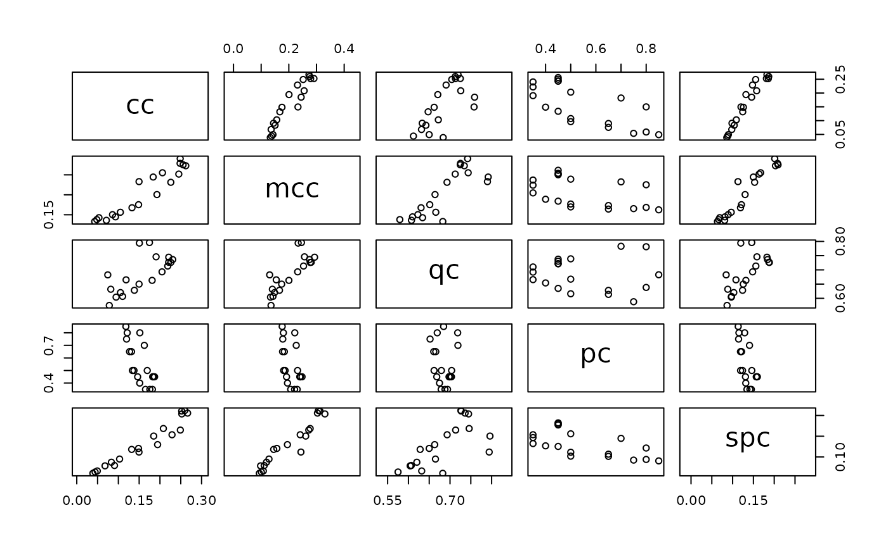
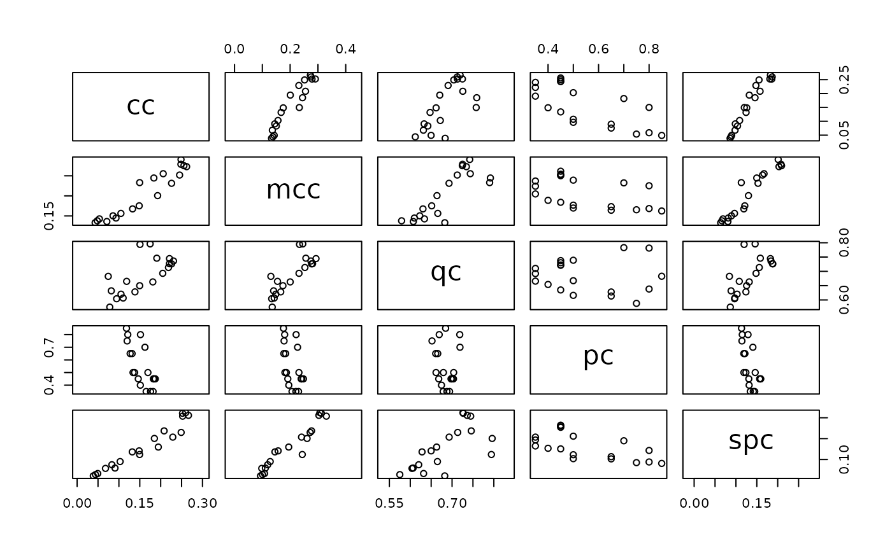

Concordance measures the strength of support that characters in a dataset present for each split (=edge/branch) in a tree (Minh et al. 2020; Smith 2026) .
Usage
ClusteringConcordance(tree, dataset, return = "edge", normalize = TRUE)
MutualClusteringConcordance(tree, dataset)
QuartetConcordance(tree, dataset = NULL, weight = TRUE, return = "edge")
PhylogeneticConcordance(tree, dataset)
SharedPhylogeneticConcordance(tree, dataset)Arguments
- tree
A tree of class
phylo.- dataset
A phylogenetic data matrix of phangorn class
phyDat, whose names correspond to the labels of any accompanying tree. Perhaps load into R usingReadAsPhyDat(). Additive (ordered) characters can be handled usingDecompose().- return
Character specifying the summary to return. Options are:
"edge": average concordance of each tree split across all characters;"char": concordance of each character averaged over all splits, weighted by each character's information content;"tree": an overall tree‑level concordance score;"all": a full array of MI components and normalized values for every split–character pair.
Matching is case‑insensitive and partial.
- normalize
Controls how the expected mutual information (the zero point of the scale) is determined.
FALSE: no chance correction; MI is scaled only by its maximum.TRUE: subtract the analytical expected MI for random association.<integer>: subtract an empirical expected MI estimated from that number of random trees.
In all cases, 1 corresponds to the maximal attainable MI for the pair (
hBest), and 0 corresponds to the chosen expectation.- weight
Logical specifying whether to weight sites according to the number of quartets they are decisive for.
Value
ClusteringConcordance(return = "all") returns a 3D array where each
slice corresponds to a character (site), each column to a tree split, and
each row to a different information measure. The normalized row gives the
normalized mutual information between each split-character pair, scaled so
that 1.0 corresponds to hBest (the theoretical maximum mutual information,
being the minimum of hSplit and hChar) and 0.0 corresponds to miRand
(the expected mutual information under random association). hSplit gives
the entropy (information content) of each split's bipartition; hChar gives
the entropy of each character's state distribution; hJoint gives the joint
entropy of the split-character confusion matrix; mi gives the raw mutual
information; and n records the number of informative observations.
Negative normalized values indicate observed mutual information below random
expectation. NA is returned when hBest = 0 (no information potential).
ClusteringConcordance(return = "edge") returns a vector where each element
corresponds to a split (an edge of the tree) and gives the normalized mutual
information between that split and the character data, averaged across all
characters.
When normalize = TRUE (default), values are scaled relative to random
expectation; when FALSE, raw mutual information normalized by hBest is
returned.
ClusteringConcordance(return = "char") returns a vector where each element
corresponds to a character (site) and gives the entropy-weighted average
normalized mutual information between that character and all tree splits.
Characters with higher information content receive proportionally more weight
from splits that can potentially convey more information about them.
ClusteringConcordance(return = "tree") returns a single value representing
the overall concordance between the tree topology and the character data.
This averages the fit of the best-matching split for each character.
This is included for completeness, though it is not clear that this is a useful
or meaningful measure.
MutualClusteringConcordance() returns the mutual clustering
concordance of each character in dataset with tree.
The attribute weighted.mean gives the mean value, weighted by the
information content of each character.
QuartetConcordance(return = "edge") returns a numeric vector giving the
concordance index at each split across all sites; names specify the number of
each corresponding split in tree.
QuartetConcordance(return = "char") returns a numeric vector giving the
concordance index calculated at each site, averaged across all splits.
PhylogeneticConcordance() returns a numeric vector giving the
phylogenetic information of each split in tree, named according to the
split's internal numbering.
SharedPhylogeneticConcordance() returns the shared phylogenetic
concordance of each character in dataset with tree.
The attribute weighted.mean gives the mean value, weighted by the
information content of each character.
Details
ClusteringConcordance() measures how well each tree split reflects the
grouping structure implied by each character
(Smith 2026)
.
Characters and splits are treated as clusterings of taxa, and their agreement
is quantified using mutual information (MI). All reported values are scaled
so that 1 corresponds to the maximum possible mutual information for each
split–character pair (hBest).
The normalize argument specifies how the zero point is defined.
If
normalize = FALSE, zero corresponds to zero MI, without correcting for the positive bias that arises because MI is rarely exactly zero in finite samples.If
normalize = TRUE, the expected MI is computed using an analytical approximation based on the distribution of character tokens. This is fast and generally accurate for large trees (≈200+ taxa), but does not account for correlation between splits.If
normalizeis a positive integern, the expected MI is estimated empirically by fitting each character tonuniformly random trees and averaging the resulting MI values. This Monte Carlo approach provides a more accurate baseline for small trees, for which the analytical approximation is biased. Monte Carlo standard errors are returned.
MutualClusteringConcordance() provides a character‑wise summary that
emphasises each character’s best‑matching split(s). It treats each character
as a simple tree and computes the mutual clustering information between this
character‑tree and the supplied phylogeny. High values identify characters
whose signal is well represented anywhere in the tree, even if concentrated
on a single edge.
QuartetConcordance() is the proportion of quartets (sets of four leaves)
that are decisive for a split which are also concordant with it
(the site concordance factor (Minh et al. 2020)
).
For example, a quartet with the characters 0 0 0 1 is not decisive, as
all relationships between those leaves are equally parsimonious.
But a quartet with characters 0 0 1 1 is decisive, and is concordant
with any tree that groups the first two leaves together to the exclusion
of the second.
By default, the reported value weights each site by the number of quartets
it is decisive for. This value can be interpreted as the proportion of
all decisive quartets that are concordant with a split.
If weight = FALSE, the reported value is the mean of the concordance
value for each site.
Consider a split associated with two sites:
one that is concordant with 25% of 96 decisive quartets, and
a second that is concordant with 75% of 4 decisive quartets.
If weight = TRUE, the split concordance will be 24 + 3 / 96 + 4 = 27%.
If weight = FALSE, the split concordance will be mean(75%, 25%) = 50%.
QuartetConcordance() is computed exactly, using all quartets, where as
other implementations (e.g. IQ-TREE) follow
Minh2020)
in using a random subsample
of quartets for a faster, if potentially less accurate, computation.
Ambiguous and inapplicable tokens are treated as containing no grouping
information (i.e. (02) or - are each treated as ?).
PhylogeneticConcordance() treats each character in dataset as a
phylogenetic hypothesis and measures the extent to which it supports the
splits of tree. Each character is first interpreted as a tree (or set of
trees) in which taxa sharing the same token form a clade. Only splits for
which the character contains at least four relevant taxa can contribute
information.
For each split, the function identifies which characters could potentially support that split (i.e. those for which the induced subtrees contain informative structure), and among these, which characters are actually compatible with the split. The concordance value for each split is the proportion of informative characters that support it. A value of 1 indicates that all characters informative for that subset of taxa support the split; a value of 0 indicates that none do. Characters that contain only ambiguous or uninformative states for the relevant taxa do not affect the result.
SharedPhylogeneticConcordance() treats each character as a simple tree.
Each token in the character corresponds to a node whose pendant edges are the
taxa with that token.
The Shared Phylogenetic Concordance for each character in dataset is then
the Shared Phylogenetic Information (Smith 2020)
of
this tree and tree.
References
Minh BQ, Hahn MW, Lanfear R (2020).
“New methods to calculate concordance factors for phylogenomic datasets.”
Molecular Biology and Evolution, 37(9), 2727–2733.
doi:10.1093/molbev/msaa106
.
Smith MR (2020).
“Information Theoretic Generalized Robinson-Foulds Metrics for Comparing Phylogenetic Trees.”
Bioinformatics, 36(20), 5007–5013.
doi:10.1093/bioinformatics/btaa614
.
Smith MR (2026).
“Which characters support which clades? Exploring the distribution of phylogenetic signal using concordant information.”
Forthcoming.
See also
Other split support functions:
ConcordanceTable(),
JackLabels(),
Jackknife(),
MaximizeParsimony(),
MostContradictedFreq(),
PresCont()
Examples
data("congreveLamsdellMatrices", package = "TreeSearch")
dataset <- congreveLamsdellMatrices[[1]][, 1:20]
tree <- TreeSearch::referenceTree
cc <- ClusteringConcordance(tree, dataset)
mcc <- MutualClusteringConcordance(tree, dataset)
qc <- QuartetConcordance(tree, dataset)
pc <- PhylogeneticConcordance(tree, dataset)
spc <- SharedPhylogeneticConcordance(tree, dataset)
oPar <- par(mar = rep(0, 4), cex = 0.8) # Set plotting parameters
plot(tree)
TreeTools::LabelSplits(tree, signif(qc, 3), cex = 0.8)
 plot(tree)
TreeTools::LabelSplits(tree, signif(cc, 3), cex = 0.8)
plot(tree)
TreeTools::LabelSplits(tree, signif(cc, 3), cex = 0.8)
 par(oPar) # Restore plotting parameters
# Write concordance factors to file
labels <- paste0(cc, "/", qc, "/", pc) # "/" is a valid delimiter
# Identify the node that corresponds to each label
whichNode <- match(TreeTools::NTip(tree) + 1:tree$Nnode, names(qc))
# The contents of tree$node.label will be written at each node
tree$node.label <- labels[whichNode]
ape::write.tree(tree) # or write.nexus(tree, file = "mytree.nex")
#> [1] "(((((((((((((2,3)0.149562379420377/0.794157608695652/0.8,4)0.184935667641825/0.796019900497512/0.7,5)0.20819171595775/0.745984310795667/0.5,6)0.252514347310947/0.744573765335011/0.45,7)0.252245078562289/0.726778007130794/0.45,8)0.259768735022402/0.72615039281706/0.45,9)0.266452006337089/0.736253135249855/0.45,10)0.24899908514303/0.713525905547914/0.35,11)0.229007019314838/0.693087173792338/0.35,12)0.194334780947723/0.663097646420289/0.35,(19,((18,(17,(15,16)0.0440321207760113/0.575/0.75)0.0832468688317976/0.62020202020202/0.65)0.090663238556201/0.606779661016949/0.5,(13,14)0.0387128729419644/0.6825/0.85)0.131971292616076/0.628180398640581/0.45)0.148429840064932/0.649913605288859/0.4)0.102926855109339/0.665/0.5,(20,(21,22)0.0493371346659929/0.631908237747654/0.8)0.067903419208318/0.60419091967404/0.65)NA,1)NA;"
# Display correlation between concordance factors
pairs(cbind(cc, mcc, qc, pc, spc), asp = 1)

data(congreveLamsdellMatrices)
myMatrix <- congreveLamsdellMatrices[[10]]
ClusteringConcordance(TreeTools::NJTree(myMatrix), myMatrix)
#> 25 26 27 28 29 30 31
#> 0.08282272 0.11886080 0.12419589 0.13496271 0.15151832 0.10201413 0.06842490
#> 32 33 34 35 36 37 38
#> 0.07011543 0.05851130 0.04841491 0.02113031 0.10546625 0.05179507 0.04159489
#> 39 40 41 42 43
#> 0.09064994 0.08565354 0.08941077 0.09309091 0.07472220
par(oPar) # Restore plotting parameters
# Write concordance factors to file
labels <- paste0(cc, "/", qc, "/", pc) # "/" is a valid delimiter
# Identify the node that corresponds to each label
whichNode <- match(TreeTools::NTip(tree) + 1:tree$Nnode, names(qc))
# The contents of tree$node.label will be written at each node
tree$node.label <- labels[whichNode]
ape::write.tree(tree) # or write.nexus(tree, file = "mytree.nex")
#> [1] "(((((((((((((2,3)0.149562379420377/0.794157608695652/0.8,4)0.184935667641825/0.796019900497512/0.7,5)0.20819171595775/0.745984310795667/0.5,6)0.252514347310947/0.744573765335011/0.45,7)0.252245078562289/0.726778007130794/0.45,8)0.259768735022402/0.72615039281706/0.45,9)0.266452006337089/0.736253135249855/0.45,10)0.24899908514303/0.713525905547914/0.35,11)0.229007019314838/0.693087173792338/0.35,12)0.194334780947723/0.663097646420289/0.35,(19,((18,(17,(15,16)0.0440321207760113/0.575/0.75)0.0832468688317976/0.62020202020202/0.65)0.090663238556201/0.606779661016949/0.5,(13,14)0.0387128729419644/0.6825/0.85)0.131971292616076/0.628180398640581/0.45)0.148429840064932/0.649913605288859/0.4)0.102926855109339/0.665/0.5,(20,(21,22)0.0493371346659929/0.631908237747654/0.8)0.067903419208318/0.60419091967404/0.65)NA,1)NA;"
# Display correlation between concordance factors
pairs(cbind(cc, mcc, qc, pc, spc), asp = 1)

data(congreveLamsdellMatrices)
myMatrix <- congreveLamsdellMatrices[[10]]
ClusteringConcordance(TreeTools::NJTree(myMatrix), myMatrix)
#> 25 26 27 28 29 30 31
#> 0.08282272 0.11886080 0.12419589 0.13496271 0.15151832 0.10201413 0.06842490
#> 32 33 34 35 36 37 38
#> 0.07011543 0.05851130 0.04841491 0.02113031 0.10546625 0.05179507 0.04159489
#> 39 40 41 42 43
#> 0.09064994 0.08565354 0.08941077 0.09309091 0.07472220